Chemistry is defined as the study of composition, structure, and properties of matter. Matter is defined as anything that takes up space and has a mass (e.g. hair, water, table, etc..).
Primary source for these notes is Khan Academy's Chemistry course, with additional information from Wikipedia and other sources.
An element is matter that cannot be broken down any further by chemical reaction -- it's a substance made entirely out of one type of atom. Each element/atom has a specific set of properties that defines how it acts/reacts (e.g. weight, colour, how light reflects, etc..).
The term element is often used to refer to the type of atom. For example, "water is made up of the elements hydrogen and oxygen."
Examples of matter made up of a single type of atom:
Examples of matter made of multiple types of atoms:
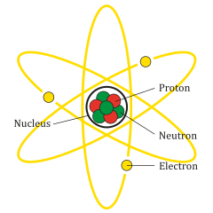
The building blocks of atoms are referred to as sub-atomic particles: protons, neutrons, and electrons. Protons and neutrons form the nucleus of the atom while electrons jump around in orbit of thenucleus. The configuration of an atom (number of protons/neutrons/electrons) is what defines its type and predicts how it reacts to other atoms.
For each atom, the number of ...
Protons are positively charged while electrons are negatively charged. Oppositely charged particles will attract while like charges repel. As such, ...
Neutrons may not have a charge, but they play a roll in spacing out proton atoms such that their repulsion from each other isn't strong enough to break up the nucleus.
Terminology around atoms and sub-atomic particles:
Atoms may form bonds with one another to form larger structures known as molecules and ionic compounds.
The periodic table below orders atoms by the atomic number (number of protons)...
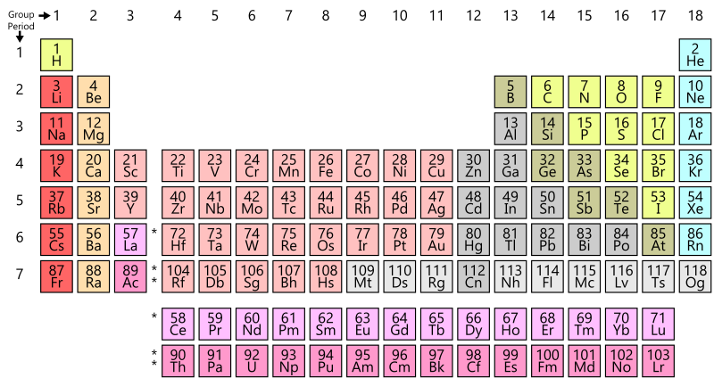
Electron shells are distinct orbits/regions around the nucleus that electrons are assigned to. There are 7 electron shells in total and each shell can hold onto a certain number of electrons. Ordered from closest to the nucleus to farthest from from the nucleus, these shells are...
| # | Label | Max Electrons |
|---|---|---|
| 1 | K | |
| 2 | L | |
| 3 | M | |
| 4 | N | |
| 5 | O | |
| 6 | P | |
| 7 | Q |
Each electron shell is made up of one or more electron subshells. These electron subshells are...
| # | Label | Max electrons | Owning electron shells |
|---|---|---|---|
| 0 | s | 2 | 1,2,3,4,5,6,7 (all) |
| 1 | p | 6 | 2,3,4,5,6,7 |
| 2 | d | 10 | 3,4,5,6,7 |
| 3 | f | 14 | 4,5,6,7 |
| 4 | g | 18 | 5,6,7 ??? |
Wikipedia says that electron subshells past f or g are theoretical? Unsure exactly what this means.
The outer most electron shell is called the valence shell and electrons within it are called valence electrons. Since these electrons travel the farthest from the nucleus, the nucleus's pull on them is the weakest. As such, valence electrons are the electrons passed between atoms and / or used in the formation of bonds.
2 atoms that have formed a bond by sharing some of their valence electrons are said to have a covalent bond.
It's only called a valence shell if the atom isn't charged. If the atom is an ion, you can't call the outermost shell a valence shell.
Atoms can be written down in 2 different forms: hyphen notation and isotope notation.
Hyphen notation is a way of describing a type of atom. It's defined as...
name-A
where ...
For example, carbon-13 is the hyphen notation for a carbon atom that's mass number is 13. Since we know that carbon has the atomic number 6 (protons=6) and the mass number of 13 (protons+neutrons=13), we know that the number of neutrons is 7 because 13-6=7.
Isotope notation is a shorthand way of describing an atom. It's defined as...
where ...
For C, the notation is to write the sign after the digits. For example, ...
For example, is an atom of nitrogen with a count of 7 protons, 9 electrons, and 6 neutrons. Since we know that...
In certain cases, some parts of the notation may be left off:
Z is almost always left out (e.g. ⟶ ).
Z is the number of protons (atomic number). Since the number of protons defines the type of atom, including it is redundant. The symbol already tells us what the type of atom is, which tells us what the number of protons is.
A C of 0 is left out entirely (e.g. ⟶ ).
A C of -1 won't include the digit: (e.g. ⟶ ).
A C of +1 won't include the digit: (e.g. ⟶ ).
The notion of atomic weight in chemistry is different from weight in physics -- read below.
The atomic mass of an atom is measured in atomic mass units (amu), where 1 amu is: grams. Note that 1 amu is roughly equal to the mass of a single proton / neutron:
That's because the constant for 1 amu was derived by measuring the mass of carbon-12 and dividing it by 12. Carbon-12 has exactly 6 protons and 6 neutrons (12 total). Since protons and neutrons have roughly the same mass (and electrons have almost no mass), when carbon-12 is divided by 12 it roughly gives the mass of a single proton / neutron.
Carbon-12 was chosen because it's the most common carbon isotope on earth (99% abundance).
The atomic weight / relative atomic mass of an atom is the weighted average of atomic mass across all its isotopes, where each isotope is weighted by how abundant it is. For example, there are 3 isotopes for the some imaginary atom type...
Its atomic weight can be calculated as amu.
How are abundances calculated? A chunk of the naturally occurring element is dug up and passed through a machine called a Gas Chromatograph-Mass Spectrometer. The machine isolates by weight and shows how abundant each weight is.
A mole is the unit used to measure the number/count of the particular particle making up a larger substance (e.g. proton, atom, molecule, etc..). 1 mole is particles. For example, ...
The constant for mole is also know as the Avogadro number. It's the number of carbon-12 atoms required to reach a mass of 12 grams.
Notice that for each type of atom, the mass of 1 mole of name-x is equal to x grams.
Recall that...
So if we know that an atom of gold has 107 protons and neutrons, we know that its mass is 107 amu (and vice versa).

Since we know carbon-12 has a mass of 12 amu (contains 12 protons/neutrons)...
As such, name-x has a mass of x amu (contains x protons/neutrons)...
For example...
When atoms bind together by sharing electrons, they form a molecule. Each type of molecule has the same configuration of atoms -- same atoms in the same numbers, structured/shaped similarly. For example, a water molecule is made up of 2 hydrogen atoms and 1 oxygen atom binding together in a house-roof shape...
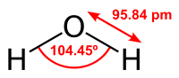
As far as I can tell, the atoms will always bind in the same way. You can't ever have a molecule that has the same types of atoms in the same numbers but with a different structure.
The type of bond that holds together atoms in a molecule is called covalent bond / molecular bond. In a covalent bond, 2 atoms share some or all of their electrons. The simplest example of this is hydrogen gas: 2 hydrogen atoms that are stuck together because each hydrogen atom is attracted to the other's electron.

If only ...
If a molecule is made up of different types of atoms, it's called a molecular compound. For example...
A monomer is a special designation for atoms/molecules that are able to join with other monomers to create even larger molecules. The process of joining is called polymerization and the resulting molecule is called a polymer.

If the monomers that make up a polymer are all the same, the polymer is called a homopolymer. Otherwise, it's called a heteropolymer / copolymer.
For example, the glucose molecule is a monomer. It can combine with other glucose molecules to create the glycogen molecule, which is a polymer / homopolymer. Other examples of polymers (according to Wikipedia): amino acids and nucleotides (DNA).
There are probably special properties to monomers that allow them to chain up. The Wikipedia page talks about a feature of monomers being a "carbon double bond" which is what allows them to form polymers.
Polymers are often referred to as macromolecules -- molecules that have a very large number of atoms.
An ion is a charged atom or molecule. A charged atom/molecule just means that it has an unequal number of protons and electrons:
When 2 atoms/molecules are said to be oppositely chargeds, it means that one of them is positively charged while the other is negatively charged.
Ions are always trying to lose their charge and become neutral, either by giving up an electrons or pulling in an electrons such that the number of protons and electrons become equal. As such, ions will attract towards oppositely charged ions and repel from similarly charged ions:
In an ionic compound, 2 oppositely charged ions create a bond by virtue of their attraction to each other. That is, the ions bond together because the other has an opposite charge, but neither ion steals/gives electrons to the other. This form of bond is called a ionic bond.
The process for how an ionic bond forms is as follows ...
The 2 atoms are now oppositely charged ions and as such are attracted to each other. No further electron swaps happen between them.
Since the atoms that form an ionic compound are still charged, other ions may still attract to them and vice versa. That is, an atom that's in an ionic bond is still charged. As such, other charged atoms can attract to the atoms in an ionic bond to form their own ionic bonds, there by leading to a larger structure.
For example, sodium and chlorine bind together via an ionic bond. However, even though they've bonded, other chlorine atoms atoms will attract the bonded sodium and other sodium atoms will attract to the bonded chlorine, forming chains...

Structures like the one in the example above are called crystal lattices. The smallest possible version of the above structure is referred to as a formula units. In the example above...
The structure in the example above is table salt.
chemical formulas are a way of representing molecules in text. In it's simplest form, it's a string of atomic symbols where each symbol is followed by a subscript of that atom's occurrence count in the molecule. For example, a molecule of ...
In this basic definition of chemical formula notation, there are no set rules as to which atom type is written first. However, things quickly get more complex: see See https://chemistry.stackexchange.com/q/1239.
structural formulas are a way of representing molecules as diagrams that somewhat expose their 3D structure. In it's simplest form, it consists of atomic symbols with straight lines between them that represent bonds. For example, can be diagramed as...

Other information such as depth can be conveyed by using a stereo structural formula. For example, the same molecule above can be diagramed as...

, where the...
In structural formulas, edges are only drawn when if bonds are covalent bonds. If there isn't a covalent bond, there is no line drawn.
A better way to represent the structure for a molecule may be to use actual 3D renderings. For example, the same molecule above () can be rendered either as a...

In this type of model, sticks represent bonds while balls represent atoms.

In this type of model, each atom is represented by a ball and the relative sizes of atoms are represented.
Recall that, in an ionic compound, ...
The ions that make up an ionic compound are written in such a way that...
For example... = Sodium sulfide. Note that...
Why aren't counts and charges not included? Just by seeing "sodium sulfide" we know that the...
To determine the actual counts, you just need to do some math. How many of the ion with the lower charge (sodium) do you need to neutralize 1 instance of the ion with higher charge?
You need 2 sodium ions to neutralize 1 sulfur ion.
What happens is x is not a whole number? multiply both counts by the coefficients required to get it to a whole number.
To determine the name of ...
To determine the charges of ...
an atom, use the periodic table. When an atom becomes charged (ion), its charge can be predicted based on where on the periodic table it sits. Elements in group ...
Elements outside these groups have more than 1 predictable charge. For example, an iron ion can be either 2+ or 3+. Since the charges of the 2 ions that make up an ionic compound have to cancel each other out, the other ion can be used to determine which charge to pick (see examples).
a molecule, it'll always be a single known charge given by the formula (e.g. has a 2- charge).
When converting a chemical formula to a name, use the flowchart shown below.

For example, is named sodium chloride:

For example, is named iron (III) chloride:

How was the charge of iron determined? We know that ...
Since the 3 chlorine anions give a 3- charge and the overall net charge for a ionic compound must be 0, iron (III) is our only option.
For example, is named sodium carbonate:

For example, is named ammonium nitrate:

When converting a chemical formula to a name, use the flowchart shown below.

Ratio refers to the ratio of cations to anions needed to satisfy a neutral charge. In other words, the number of cations to anions needed to create 1 instance (formula unit?) of the ionic compound.
x = 1 / cation.charge
y = 1 / anion.charge
if (!is_whole_number(x)) {
x = x * cation.charge
y = y * cation.charge
}
if (!is_whole_number(y)) {
x = x * anion.charge
y = y * anion.charge
}
Ration will be x:y.
For example, cation=3+ and anion=1-...
x = 1 / cation.charge // x=1/3
y = 1 / anion.charge // x=1/3 y=1/1
if (!is_whole_number(x)) { //true
x = x * cation.charge // x=3/3 y=1/1
y = y * cation.charge // x=3/3 y=3/1
} //
if (!is_whole_number(y)) { //false
x = x * anion.charge
y = y * anion.charge
}
The ratio here is 1:3 -- the compound requires 1 cations and 3 anions.
For example, cation=2+ and anion=3-...
x = 1 / cation.charge // x=1/2
y = 1 / anion.charge // x=1/2 y=1/3
if (!is_whole_number(x)) { //true
x = x * cation.charge // x=2/2 y=1/3
y = y * cation.charge // x=2/2 y=2/3
} //
if (!is_whole_number(y)) { //true
x = x * anion.charge // x=6/2 y=2/3
y = y * anion.charge // x=6/2 y=6/3
}
The ratio here is 3:2 -- the compound requires 3 cations and 2 anions.
For example, the chemical formula for sodium chloride is :

For example, the chemical formula for iron (III) oxide is :

For example, the chemical formula for sodium carbonate is :

For example, the chemical formula for ammonium nitrate is :

In cases like this where the ratio's 1:1, parenthesis can be omitted if desired: .
In cases where the ratio isn't 1:1, parenthesis can be removed by multiplying out. For example, ammonium has a 1+ charge while carbonate has a 2- charge -- you need 2 ammonium to cancel the charge of 1 carbonate: . Multiplying the the components of the ammonium out by its subscript results in the simplified chemical formula: .
The following table lists the shorthand names / chemical formulas of many common polyatomic ions (charged molecules).
| Chemical Formula | Name | Informal/Common Names |
|---|---|---|
| Ammonium | ||
| Nitrite | ||
| Nitrate | ||
| Sulfite | ||
| Sulfate | ||
| Hydrogen sulfate | Bisulfate | |
| Hydroxide | ||
| Cyanide | ||
| Phosphate | ||
| Hydrogen phosphate | ||
| Dihydrogen phosphate | ||
| Thiocyanate | ||
| Carbonate | ||
| Hydrogen carbonate | Bicarbonate | |
| Hypochlorite | ||
| Chlorite | ||
| Chlorate | ||
| Perchlorate | ||
| () | Acetate | |
| Permanganate | ||
| Dichromate | ||
| Chromate | ||
| Peroxide | ||
| Oxalate |
A chemical reaction is when energy is used to make molecules and ionic compounds reorganize their atoms such that they form different molecules / ionic compounds. For example, 2 hydrogen pair molecules and a oxygen pair molecule may react such that they form 2 water molecules:

results in...

The...
For the example above, the reactants are and while the product is .
A chemical reaction that takes places can be written out as a chemical equation, where reactants are placed on one-side, products are placed on the other, and an arrow indicates which side the inputs are and which side the outputs are. For example, the chemical equation for the example above is .
The type of arrow used in a chemical equation determines the type of reaction it is:
- An irreversible reaction is a chemical reaction that it'll likely only ever occur one-way. It's a reaction that requires much more energy to reverse the reverse than it did to originally perform, so much so that it'll almost never occur naturally (without human intervention).
The example above is an irreversible reaction: .
- A reversible reaction is a chemical reaction that's likely to occur either way.
An example of a reversible reaction: .
Don't get confused. It's called an irreversible reaction but it actually it's irreversible -- it's just means that it's very hard to reverse it.
Balancing a chemical equation means finding the ratios of reactants and products in a a chemical equation. In other words, how much of the reactants and products are needed to have an equal count of elements on both sides of the chemical equation.
For example, the chemical equation is unbalanced because the number of hydrogen and oxygen elements between the left-hand side and the right-hand side are NOT equal:
To balance it, find the coefficients for each item in the chemical equation: -- solve for x, y, and z. There are 2 ways do this...
These methods are detailed in the sub-sections below.
The first method is to use trial-and-error until the element counts match up between the sides. The high-level algorithm for this is to...
pick a set of coefficients.
x=1, y=1, z=1 →
for each item on the LHS, add up the number of elements.
contains and .
for each item on the RHS, add up the number of elements.
contains and .
if the element counts between LHS and RHS don't match, go to 1 (new set of coefficients).
-- ✔️ matches!
-- ❌ no match, try again with different coefficients
In the example above, when ...
results in...
The second method is to use algebra to figure out the ratios of each item to reach a balanced chemical equation. The high-level algorithm for this is to...
determine all elements used in the equation
count up the elements for each item in the equation
→ 2 hydrogen
→ 2 oxygen
→ 2 hydrogen 1 oxygen
for each element, convert the equation so that each item maps to the count for that element
→
→
What's the point of doing this? It's essentially isolating the individual elements for each item in the equation.
solve for each variables x/y/z
isolate
→
→
→
isolate
→
→
→
set last variable () to 1
→
Why set this to 1 rather than isolate?
The 1st reason is that we have 3 variables but only 2 equations (not enough equations to isolate 3 variables).
The 2nd reason is that, since we're dealing with ratios here, we can arbitrarily set one of the variables to 1. The other variables will be ratios relative to a whole z (e.g. they'll be half of z or 1.5 times z).
solve via substitution
z:
x: →
y: →
In the example above, the balanced chemical equation comes out to . This is correct in that it provides the ratios of reactants and products needed, but not the overall counts of each. To get the overall counts, multiply each item by y's divisor (2):
→ ✔️
results in...
In most cases, it's totally fine to have the rations (fractions) rather than the counts (whole numbers).
You will run into scenarios where there aren't enough equations for variables. If you're
Stoichiometry is the process of using the coefficients in a balanced chemical equation to calculate the quantities of reactants and products. In other words, given that you have some amount of a reactants/products, use the balanced chemical equation to determine the amounts of the other reactants/products.
For example, imagine the balanced chemical equation is . If you have 3g of the reactant , ...
The high-level algorithm for this is...

The quantity type doesn't have to be grams. It often is grams but it could be something else like volume. If it were moles, the conversion to/from wouldn't be necessary.
Balance the chemical equation:
The coefficients in the balanced chemical equation are called the stoichiometric coefficients. Think of it as a ratio. For the example, the ratio is 2:1:2 -- for every 2 instances of , you'll need 1 instances of and you'll get back 2 instances of .
Stoichiometric coefficients may also be referred to as mole ratio, stoichiometric factor, or stoichiometric ratio.
Convert known quantity (3g of ) to moles:
Why moles? Recall that...
atom_count(1 gram of oxygen) != atom_count(1 gram of hydrogen) -- they have different weights. We need to convert from grams to moles because we're dealing with counts when we balance a chemical equation, not mass. Moles are a unit of counts.
We have 3g of . We know that 1mole of = 32g.
Therefore, 3g of = 96g mole of .
Use the stoichiometric ratio from step 1 to determine the moles of other reactants and products:
has the stoichiometric ratio 2:1:2.
Since the amount of is 96 moles, we know that the amount of...
Convert quantities back to grams:
The software model for balancing chemical equations and stoichiometry is straight-forward.
Parse the chemical equation.
Parsing is performed using ANTLR's grammar syntax. An in-memory DOM model is constructed from the grammar. Each atomic element that gets parsed is directly mapped to a data structure that contains its details: symbols, names, atomic weights, atomic masses, isotopes, etc.. This data was extracted from from CIAAW using a browser plugin called CopyTables.
Example of equation parsing...
Parsing 2H2 + O2 -> 2H2O
Example of bond information lookup...
Pulling information for H2O
Use the algebra method to balance the chemical equation.
Chemical equation balancing is done using the algebra method. The actual implementation of solving is delegated to the EJML library, where a matrix is populated with the coefficients and reduced row echelon form is used to solve. As noted in the section on balancing equations, the algebra method doesn't always work -- if there are more variables than there are equations that can be formed, solving via algebra isn't possible.
For most examples you come across, solving via algebra will work.
TODO: The row echelon form stuff doesn't work all the time. Find a library with a simpler API. Or maybe continue writing your own substitution based solver.
Example of balancing...
Balancing C3H8 + O2 -> CO2 + H2O
Removing stoichiometric coefficients:
Counting up elements:
For each element, determining linear equations to solve:
... where ...
Solving system of linear equations:
There are 3 equations but 4 variables. For the last equation, picking the remaining variable and setting it to 1. We can do this because we're dealing with ratios -- the coefficients are all relative to each other.
Getting it to whole numbers:
Use the stoichiometry ratio from step2 to determine the amounts of reactants and products.
Stoichiometry is done using the extracted CIAAW data from step 1. The reactant/product that's known has its mass converted from grams to moles, the stoichiometry ratio is applied to find the moles fro the remaining reactants and products, then they're all converted back from moles to grams.
Example of stoichiometry...
Stoichiometry for C3H8 + 5O2 -> 3CO2 + 4H2O
My equation is . Given that I have 0.5g of , how many grams of the remaining bonds will be required/produced?
Stoichiometric ratio for the balanced chemical equation is: [1.0 : 5.0 : 3.0 : 4.0]
Scaling stoichiometric ratio so that 's entry is 1: [0.2 : 1.0 : 0.6 : 0.8]
Converting 0.5g of to moles:
Multiplying by scaled stoichiometric ratio to get moles for other bonds:
Converting moles back to grams:
pH stands for potential of hydrogen and it's the measure of positively charged hydrogen ions in a solution. The more...
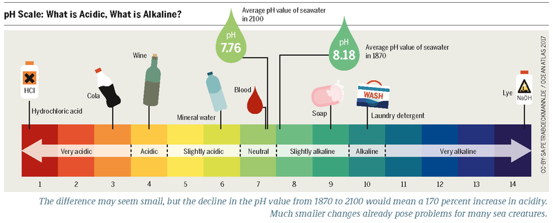
pH is scaled logarithmically from 1 to 14. Each notch on the scale moves the acidity/basicity by a factory of 10. Going...
For example, going from 7 to 4 increases acidity by 1000x times / decreases basicity by 1000x.
The closer to...
https://www.quora.com/Why-is-pure-water-considered-neutral -- Since pH is defined as the negative log of the hydrogen ion concentration, the pH of pure water is 7 or neutral. Pure water is neutral because the number of positive hydrogen ions produced is equal to the number of negative.
Biology is defined as the study of life / living things. A living thing is defined as anything that converts energy from one form to another, while using that energy to grow, change, and reproduce.
Primary source for these notes is Khan Academy's HS Biology course, with additional information from Wikipedia and other sources.
The scientific method is the standard guideline for discovery and experimentation in the sciences (chemistry, physics, biology, etc..) The basic steps are...
The last step (refine and iterate) just means that you do it all over again but make changes based on the things you learned from your experiment. For example, ...
The scientific method revolves around making an observation and coming up with a testable explanation for that observation -- called a hypothesis. If the explanation isn't testable, you can't consider it a hypothesis. For example, a good hypothesis may be that increased sun exposure leads to an increased risk of skin cancer because it's something you can test. A bad explanation may be that exposure to centaurs increase the risk of skin cancer because centaurs don't exist (and as such the hypothesis can't be tested).
The material mentions that for a hypothesis to be testable, you should be able to come up with an experiment that shows that its false -- it's falsifiable. How you word your hypothesis is typically what determines if it's testable/falsifiable -- when you read the hypothesis, what defines a failure?
A hypothesis and a theory are different things. Hypothesis is a potential answer for a specific problem. A theory provides a potential framework for a much broader class of problems based on supporting evidence. The example given by the material: "The toaster won't toast because the electrical outlet is broken" is a hypothesis, whereas "Electrical appliances need a source of electricity in order to run" is closer to a theory.
Once you have a hypothesis, you design an experiment to test it. In the case of our sun exposure leads to increased risk of skin cancer hypothesis, an experiment may be to expose skin cells to UV rays in amounts equivalent to that given off by the sun and then check to see if those cells have been damaged (compared to a control group of skin cells that you haven't exposed to UV rays).
What makes a good experiment?
There's always at least one control group in any experiment to provide a baseline. There's no limit to the number of experimental groups -- each group may have a slightly different type/amount of treatment applied.
Because things are so wishy-washy/not-exactly in biology, it's typical for an experiments to be repeated multiple times and to have a large sample size -- the larger our sample sizes and the more times we conduct the experiment, the more we can be confident of our result. What do I mean by wishy-washy? Genetic variation between samples may result in different types/levels of responses. For example, people with a certain gene may respond quicker to certain drugs than people who don't produce that gene.
Other terminology around the scientific method...
You can have more than one independent variable if you follow specific guidelines and are experienced enough, but the general rule of thumb is to have only 1 independent variable just because it makes things much simpler to analyze/interpret.
Carbohydrates (also called saccharides) are molecules that consist of a mix of carbon, hydrogen, and oxygen atoms. In biological systems, carbohydrates are often associated with...
It was never explained what 'structural role' actually means.
The term monosaccharide is just means a carbohydrate that's a monomer (e.g. glucose). Similarly, the term polysaccharide means a carbohydrate built from other monosaccharides (e.g. glycogen is made of chained glucose).

Proteins are molecules that consist of monomers called amino acids. The amino acids get chained together into a polymer called a polypeptide chain, and one or more polypeptide chains fold to a 3D structure and combine to become a protein. The 3D structure / shape of the protein (how its folded) is what gives it its abilities.
In biological systems, proteins are often associated with that facilitating some biological function. For example, the protein protease is responsible for breaking down food.

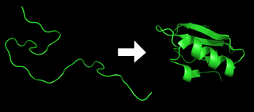
The ribosome is what's responsible for folding? Not able to get a clear answer on this.
The basic structure of an amino acid is as follows. The R is a placeholder that, when set, defines what type of amino acid it is...
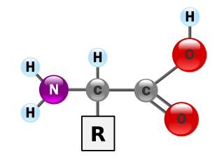
Lipids are molecules that are somewhat not water soluble -- meaning that they have parts that resist water but maybe also parts that are attracted to water. In biological systems, lipids are often associated with...
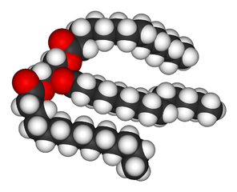
Water is essential to life -- it has unique properties that almost all biological processes depend on.
Recall that...
Oxygen atoms are extremely electronegative, meaning that oxygen has the propensity to pull the buzzing/hopping electrons more around itself than the atoms it's bound to. As such, in a water molecule, the electrons will spend more time solely around the oxygen atom than they do the hydrogen atom or a position that binds the hydrogen and oxygen together. This is what gives the oxygen atom in a water molecule a weakly negative charge (as indicated by δ-) while the hydrogen atoms have a weakly positive charge (as indicated by δ+). These types of charged molecules are called polar molecules.
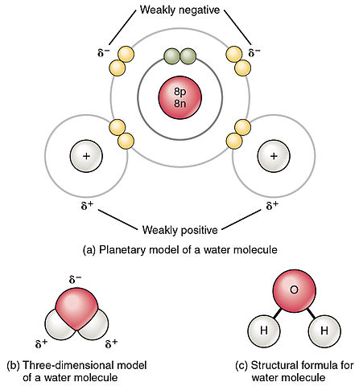
Notice the shape of the water molecule in the diagram(s) above. Electron pairs are repelled from each other. They're also responsible for binding. That's what gives molecules their shapes/structure.
This weakly negative / weakly positive charge is what gives water several of the unique properties that biological properties depend on. Water molecules have a tendency to gravitate towards each other because the weakly negative oxygen atoms and the weakly positive hydrogen atoms of different water molecules attract. This attraction is called a hydrogen bond. Hydrogen bonds are weaker than covalent bonds in that the bonds aren't really solid -- water molecules can easily break off and go past each other.
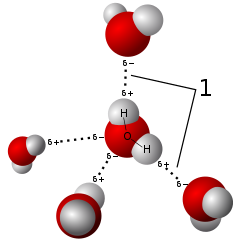
The above paragraph is just giving the mechanics for how/why water is a liquid. Water is the only molecule that's liquid at room temperature? This can't be right -- see https://chemistry.stackexchange.com/q/76346. Why can't biological processes work in one of these other molecules just as they do in water? Maybe because they stay liquid at a shorter temperature range (e.g. 15-25C instead of 1-99C?
The weak attraction between water molecules is also what makes water a solvent. So long as they're polar molecules, other molecules can travel inside of water using the same attraction from weakly negative / weakly positive charges -- they gravitate and float around water molecules just as other water molecules do. For example, the cytoplasm of a cell is a solvent (mostly water). It works because other molecules in the cytoplasm (e.g. cellular machinery) can float around / travel around using the weakly negative / weakly positive charges.
Water is called a universal solvent because it can dissolve more molecules than other other liquid. Note that the term universal doesn't mean that it can dissolve everything, just that it can dissolve more things than the others.
The properties that make water conducive for biological processes to operate:
Other terminology related to water:
Cells are the basic unit of living things / the building blocks of life. They're tiny structures that encapsulate information and machinery that allows them to replicate/reproduce and perform other important functions (e.g. appendages to move around).
Viruses are not cells but they may also be considered living because they reproduce in a roundabout way: the require machinery in the host cell to reproduce.
There are 2 types of cells: eukaryotic and prokaryotic. There main differences between them are that...
Other differences between eukaryotes and prokaryotes ...
| Eukaryotes | Prokaryotes | |
|---|---|---|
| Size | 10 to 100 micrometers (μm) | 0.1 to 5 micrometers (μm) |
| Complexity | More complex | More simple |
| Sub-compartments (organelles) | Yes | No |
| DNA layout | Multiple stands | Single circular strand |
| Single-cell organisms | Yes (e.g. amoeba) | Yes (e.g. bacteria and archaea) |
| Multi-cell organisms | Yes (e.g. animals and fungus) | No |
Archaea is an organism that looks like bacteria but they're totally different.
Different cell species vary in features. The subsections below detail common cell features (not exhaustive).
Some features are only present in certain cell speicies (e.g. only some cells have a flagellum tail) while other features are present in all cells but in different amounts (e.g. every cell has cytosol but larger cells have more cytosol).
The cytoplasm (both eukaryotic and prokaryotic) is the insides/guts of a cell. Cytosol refers to just the fluid, while cytoplasm refers to fluid as well as everything else inside the cell.
. - No machine-readable source provided. Own work assumed (based on copyright claims)., Public Domain, https://commons.wikimedia.org/w/index.php?curid=688296")
The plasma membrane (present in both eukaryotic and prokaryotic cells) is the thing encapsulating the cytoplasm. It's what keeps the guys of the cell inside and controls the movement of substances coming into / going out of the cytoplasm.
Every cell has a membrane encapsulating its cytoplasm. Membranes in general follow the fluid mosaic model.
The term membrane can refer to either the plasma membrane or the membrane of a eukaryotic cell's organelle. How you should interpret it depends on the context in which its used.
. - No machine-readable source provided. Own work assumed (based on copyright claims)., Public Domain, https://commons.wikimedia.org/w/index.php?curid=688296")

The cell wall (present in both eukaryotic and prokaryotic cells) is a stiff layer around the membrane meant for protection. Not all cells have a cell wall -- for example, animal cells don't but plant cells do. Technically, the cell wall (if it exists) isn't considered to be part of the cell. The membrane and everything in it is.
The material states that cell walls...
Almost all prokaryotes have cell walls. Only some eukaryotes have cell walls (e.g. fungi and plants). The material says that cell walls for most bacteria are made up of a molecule called peptidoglycan, but it can be different for other cells. For example, this link says that plant cells have cell walls made up of cellulose.

The Capsule (present in prokaryotic cell only) is the outermost layer of some types of cells (typically bacteria cells). Capsules are made up of carbohydrates and there mainly to help the cell stick itself to the environment.

Although eukaryotic cells don't have capsules, they do have carbohydrates on their outside. Those carbohydrates aren't organized as a capsule though: https://www.quora.com/Do-some-eukaryotic-cells-have-capsules-or-is-it-just-prokaryotes-Are-there-exceptions-of-eukaryotes-having-capsules. Is this talking about the same carbohydrates that are embedded in the membrane (glycolipids / glycoproteins).
Ribosome (present in both eukaryotic and prokaryotic cells) are tiny molecular machines inside the cytoplasm that take in mRNA molecules (portions of DNA that have been written out) and produce proteins. Ribosomes themselves are structures made of proteins and RNA.
Ribosomes can either be floating around in the cytoplasm (called free ribosome) or be embedded in the membrane of endoplasmic reticulum.
. - No machine-readable source provided. Own work assumed (based on copyright claims)., Public Domain, https://commons.wikimedia.org/w/index.php?curid=688296")
Some cells have appendages that help them move (or stay put). There are different types of appendages...
. - No machine-readable source provided. Own work assumed (based on copyright claims)., Public Domain, https://commons.wikimedia.org/w/index.php?curid=688296")
The fluid mosaic model is the accepted model for how cell membranes work. The model says that a cell membrane is composed of a phospholipid bilayer with proteins, lipids, and carbohydrates floating around on either side or embedded in between.
The description above is the rational for the name 'fluid mosaic model'. It's fluid and there's a mosaic of different things embedded or attached to it.
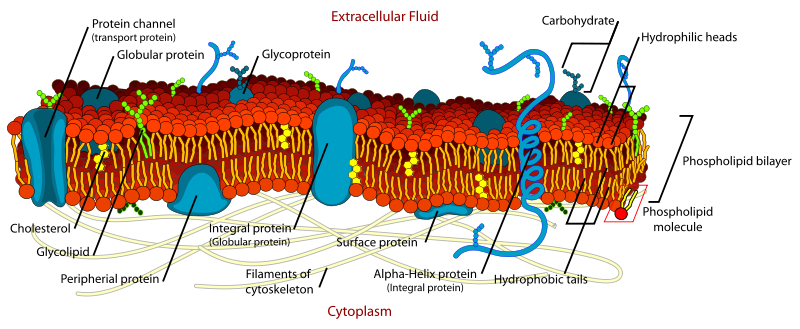
A phospholipid is a amphipathic lipid molecule that involves a phosphate group. The...
For a refresher on how hydrophobic / hydrophilic molecules work, see the section on Water. Specifically: adhesion / weakly negative / weakly positive.
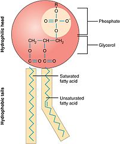
As such, phospholipids have a natural tendency to form as a phospholipid bilayer (2 layers attached together, called a liposome) or a ball (called a micelle). The hydrophilic heads are going to point towards the water causing the hydrophobic tails to point at each other.
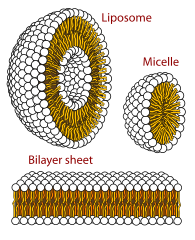
If the phospholipids have small tails, they may form a micelle (a small, single-layered sphere), while if they have bulkier tails, they may form a liposome.
How fluid a phospholipid bilayer is depends on the types of phospholipid molecules that make it up and the temperature. Phospholipid molecules have 2 fatty acid tails. The fatty acid tails can be either...
At cooler temperatures, phospholipids that have 2 saturated fatty acid tails (straight tails) tend to get more rigid / dense because they can more easily pack together. Phospholipids with unsaturated fatty acid tails (bent tails) don't end up getting as rigid / dense, allowing the membrane to stay fluid at lower temperatures. Cholesterol embedded in the phospholipid bilayer also helps it stay more fluid at lower temperatures.
Phospholipid bilayers have the consistency of oil-based salad dressing. It may seem weak but it's strong enough to act as a separator between the environment inside and the environment outside. Water from one-side can move to the other but does so very rarely -- a single molecule may sneak through the layer every now and then. Aquaporins are proteins embedded in the phospholipid bilayer that allow water to rapidly pass (when needed).
Examples of molecules that can be embedded in or attached to the phospholipid bilayer include...
See first diagram in this section for an example of each of the molecules listed above.
The term facilitated diffusion refers to the movement of molecules across the membrane via proteins embedded in the membrane (e.g. channel proteins and/or carrier proteins). These molecules wouldn't be able to cross the membrane by themselves. For example, the sodium potassium pump (carrier protein) helps sodium and potassium ions move across the cell membrane by opening/closing its gates.
The first record of a cell was in 1665 when Robert Hooke published a book called The Micrographia. The book contains drawings of observations he made while looking at various dead organisms through a rudimentary microscope.
A few years later, a Dutch lenscrafter by the name of Antonie Van Leeuwenhoek decided to use his expertise to craft a better microscope to better observe living cells / organisms. For example, he was able to observe sperm and Protists (unicellular organisms while he dubbed animalcules).
In the 1830s, Matthias Schleiden and Theodore Schwann began laying the groundwork for modern cell theory. They came up with the idea that...
They also suspected that cells come from other cells, but didn't know for sure if that was the only way they were produced. It was Robert Remak that in the mid-1800s established that...
The credit for this sometimes goes to Rudolph Virchoi but it's been established that he was a plagiarist.
It's still an open question as to how the first / initial cell came to be. The current working theory is that, 3.5 billion years ago, phospholipids (the molecules that form the membrane of a cell) naturally form bilayers and connect in a circle. A membrane may have naturally encapsulated a set of arbitrary self-replicating molecules (e.g. protein or RNA) and that's how the first cell began growing and splitting off.
There are an estimated 37 trillion cells in the human body.
, Public Domain, https://commons.wikimedia.org/w/index.php?curid=3648821")
, Public Domain, https://commons.wikimedia.org/w/index.php?curid=844682")
Eukaryotic cells are typically larger and have membrane-bound sub-compartments, called organelle, that hold in the guts of different regions of the cell. For example, their DNA is encapsulated in a organelle called the nucleus.
Eukaryotes have their DNA broken up into multiple strands called chromosomes. They can either be single-cellular organisms (e.g. amoeba) or multi-cellular organisms (e.g. human). Single-cellular organism that are eukaryotic are called protists.
The following are descriptions for some of the organelles shown in the diagram above.
Eukaryotic cells have membrane-bound sub-compartments, called organelles, that house different functional regions of the cell. The following subsections detail common organelles.
Nucleus is an organelle that contains DNA (genetic information required for the functioning and replication). Both prokaryotic and eukaryotic cells have DNA, but only eukaryotic cells have a nucleus. In prokaryotic cells, the DNA flows around freely instead of being encapsulated in a nucleus.

Most eukaryotic cells contain a single nucleus, but some contain can have 0 and others can have more than one. An example of 0 is blood cells -- mature blood cells don't have any DNA, therefore no nucleus. An example of more than 1 is the organism Oxytricha trifillax -- it contains 2 nuclei, each containing different DNA (its DNA is fragmented across 2 nuclei).
Endoplasmic Reticulum is layered membrane (organelle?) that surrounds the nucleus and is directly connected to pores on the nucleus. Large portions of the endoplasmic reticulum's membrane have ribosomes attached. The parts that have ribosomes attached are called rough endoplasmic reticulum while the parts that don't are called smooth endoplasmic reticulum.
It's called rough endoplasmic reticulum because the ribosomes make the surface look rough.
![a) The ER is a winding network of thin membranous sacs found in close association with the cell nucleus. The smooth and rough endoplasmic reticula are very different in appearance and function (source: mouse tissue). (b) Rough ER is studded with numerous ribosomes, which are sites of protein synthesis (source: mouse tissue). EM × 110,000. (c) Smooth ER synthesizes phospholipids, steroid hormones, regulates the concentration of cellular Ca++, metabolizes some carbohydrates, and breaks down certain toxins (source: mouse tissue). EM × 110,510. (Micrographs provided by the Regents of University of Michigan Medical School © 2012)](/.datafile_b270c13d0bb642adf2ffa7a1a1e77982/data.svg "By OpenStax - https://cnx.org/contents/FPtK1zmh@8.25:fEI3C8Ot@10/Preface, CC BY 4.0, https://commons.wikimedia.org/w/index.php?curid=30131197")
Recall that ribosomes are what translate mRNA to proteins. Since the endoplasmic reticulum is directly connected to the nucleus (via pores on the nucleus), it provides a fairly straight-forward path for protein generation: mRNA produced in the nucleus...
Golgi are layered membrane (organelle?) that look similar to rough endoplasmic reticulum but aren't attached to the nucleus. Golgi package molecules (e.g. proteins) for travel to either another part of the cell or outside of the cell. They do this by pinching off parts of their membrane to wrap around the molecule.
They're also responsible for building lysosomes (cell digestion machines).
The terms golgi, golgi apparatus, golgi complex, and golgi body all refer to the same thing.

Mitochondria are organelles responsible for cellular respiration: the process of producing Adenosine Triphosphate (ATP) from molecules such as sugars. ATP is a chemical that provides energy to drive various biological processes (e.g. muscle contractions). As such, mitochondria are often referred to as "the power house of the cell."

Mitochondria exist in both animal and plant cells.
The major parts of chloroplast are...
Mitochondria have their own independent DNA (different from the DNA in the nucleus). It's speculated that at some point in the past they may have been independent single-cell organisms that formed a symbiotic relationship with a larger cell by living in it, eventually becoming part of the cell (endosymbiosis).
Unlike how normal offspring DNA gets produced by mixing DNA from both parents, mitochondrial DNA comes entirely from the mother's side.
Lysosomes are organelles (animal cells only) that help break down waste products / foreign substances by containing various enzymes and maintaining an acidic pH. Lysosomes are more often found in animals cells than plant and algae cells.
According to the material, the evidence that they've been found in plant cells is recent.

Peroxisomes are organelles that are similar to Lysosomes -- both are small organelles that break down unwanted substances. The difference is that peroxisomes have different types of enzymes that require oxygen (oxidative enzymes).
The material says that peroxisomes make hydrogen peroxide: Similarly, structures called peroxisomes carry out chemical reactions called oxidation reactions and produce hydrogen peroxide, both of which would damage the cell if they weren’t safely stored away in their own “room.”
, Public Domain, https://commons.wikimedia.org/w/index.php?curid=7072127")
Chloroplasts are organelle (only plant and algae cells) responsible for photosynthesis. Photosynthesis is the process of taking in light and using it to build sugars from water and carbon dioxide. Those sugars are then used by the mitochondria to produce energy in a process called cellular respiration.

The major parts of chloroplast are...
Chlorophyll is a pigment / compound found in chloroplast that absorbs light and uses it to produce carbohydrates. It's found in the thylakoid membrane as well as the stroma, and it only absorbs red and blue light (while reflecting green).
Like mitochondria, chloroplast have their own independent DNA (different from the DNA in the nucleus). It's speculated that at some point in the past they may have been independent single-cell organisms that formed a symbiotic relationship with a larger cell by living in it, eventually becoming part of the cell (endosymbiosis). A descendant of that organism may be cyanobacterium, which has a similar ability to generate sugars from light (see Wikipedia).
Vacuoles are organelle (mostly plant and algae cells) responsible for storage (water, food, waste?) and enzymes that help break things down. Vacuoles are typically found in plant and algae cells, but may also exist in animal cells. The ones in plants / algae tend to be much larger.
Vacuoles are often responsible for a plant's shape. For example, a well watered plant will be upright and spry because its vacuoles are full. A plant that isn't as well watered may be sagging down or wilting because the vacuoles are less full
![By LadyofHats - did it myself based on [1], [2] ,[3] and [4]., Public Domain, https://commons.wikimedia.org/w/index.php?curid=1685428](/.datafile_dc4ef0ca430c98a807cf410e893a8aeb/data.svg "In biology, turgor pressure or turgidity is the pressure of the cell contents against the cell wall, in plant cells, determined by the water content of the vacuole, resulting from osmotic pressure.")
The genome of eukaryotes are split into linear strands of DNA. These linear DNA strands come in 2 forms...
Chromatin and chromatid are mutually exclusive. As long as it has a copy attached to it, it's referred to as chromatid. Otherwise, it's referred to as chromatin.
The term chromosome can refer either to a chromatin or a sister chromatid pair, but never a single sister chromatid.

Each chromosome codes for the same set of genes. Since eukaryotes reproduce sexually (mother and father required), they contain genetic information from both the mother and father. The way this manifests itself is that most eukaryotes will come with multiple versions of the same chromosome. In...
These chromosomes are referred to as homologous chromosomes: 2 or more chromosomes that code for the same set of genes but aren't exactly the same (different versions of the same genes). In other words, the chromosomes are homologous.
An example straight from the material of homologous pair of chromosomes working: As a real example, let's consider a gene on chromosome 9 that determines blood type (A, B, AB, or O). It's possible for a person to have two identical copies of this gene, one on each homologous chromosome—for example, you may have a double dose of the gene version for type A. On the other hand, you may have two different gene versions on your two homologous chromosomes, such as one for type A and one for type B (giving AB blood).
When creating cells for reproduction (gamete cells), the cells only keep 1 copy from each each homologous chromosome pair. These cells are referred to as haploid cells because they only carrying n chromosomes.
To recap, a cell can have a number of chromosome copies:
An organism has an extra / missing copy of a chromosome (e.g. 2 expected but 3 present) is called aneuploid.
The following diagram shows a karyotype of a human's diploid homologous chromosome pairs 1 2 and 3:

Certain eukaryotic species (some mammals/snakes/insects/etc..) have an extra pair of chromosomes that aren't alternate versions of each other but instead are totally different and used to determine the sex of the offspring. This extra pair is called sex chromosomes / XY chromosomes, and it determines the sex of the organism. The X and the Y refer to the chromosome types that can appear in the pair -- XX results in a female, while XY results in a male.
The chromosomes that make up the homologous chromosomes are sometimes referred to as autosomes while the ones that make up sex-determining chromosomes (non-homologous chromosomes) are called allosomes. For example, in humans there are 44 autosomes (22 homologous chromosome pairs) and 2 allosomes (1 sex-determining chromosome pair).

An organism has an extra / missing copy of a chromosome (e.g. 2 expected but 3 present) is called aneuploid. Depending on the species and circumstances, aneuploidy may lead to death, disease, or possibly no adverse effects at all. For example, allosomal aneuploidy in certain female mammals rarely leads to adverse effects because of X-linked inactivation.
The cell cycle is the sequence of events a cell goes through from when it's created (divides off) up to when it divides itself. In eukaryotic cells, the cell cycle has 2 major phases:
Each phase has a set of inner phases it goes through.

The majority of a cell's life is spent in interphase, where it's growing and going about its business.

G1 phase / Gap 1 phase / Gap I phase

The cell grows.
Prior to entering the next phase, the cell can go into the G0 phase / resting phase, where it's essentially pausing division. One reason for this may be contact inhibition: when cells start touching up on other cells, it's a signal that it's becoming too crowded and that they should stop dividing.

The chromatin in the nucleus gets replicated to become a sister chromatid pair (2 copies that are attached). The centrosome also gets duplicated.
G2 phase / Gap 2 phase / Gap II phase

The cell grows more.
The mitotic phase is portion of a cell's life where it divides into 2 new daughter cells.


The sister chromatid pairs start to condense into an X shape, where the only part they remain attached at is their centromeres. The membrane of the nucleus goes away and the 2 centrosomes that were originally attached to that membrane get moved to opposite ends of the cell.
Microtubules are attached from the centrosomes to the kinetochore of the sister chromatid pairs. Kinetochores are proteins located at the centromere of the sister chromatids.

The sister chromatid pairs line up in the middle of the cell.

As the cell splits apart, the microtubules also split apart the sister chromatid pairs. Once split, they're individually referred to as chromatin again.
I believe the labeling on the above diagram to be incorrect. Once split, they're no longer referred to as sister chromatids / chromatids. They're referred to as chromatin.

During telophase, nucleus membranes re-form around the newly split chromatin. The chromatin also start to un-condense.
During cytokinesis, the middle of the cell starts to push together and pinch off, forming 2 separate cells. Cytokinesis technically happens in parallel with mitosis (it isn't a part of mitosis), but it starts near the end of mitosis (around telophase).
Meiosis is a type of eukaryotic cell division that results in 4 daughter cells, where each daughter cell has half the number of chromosomes as the parent cell.
The source cell is known as a germ cell -- a cell that can either go through mitosis or meiosis. Somatic cells, on the other hand, are general body cells and can only go through mitosis.
The resulting daughter cells are known as gamete cells -- cells that have half the genetic information from the original parent (haploid -- only 1 chromosome of from each of the parent's homologous chromosome pairs), and when they merge they mix that genetic material to create the new genetic material for the offspring. Male gamete cells are called sperm, while female gamete cells are called ova or eggs.
Meiosis has 2 major phases:

During meiosis I, a germ cell divides in such a way that, rather than exactly duplicating each chromosome, it duplicates and mixes between each homologous chromosome pair. That is, chromosome pairs that are different versions of each other end up swapping segments (chromosomal crossover).
Remember that most cells have a diploid number of chromosomes (2n), where each chromosome is a different version of another chromosome in that same cell (homologous chromosome pairs -- e.g. code for different versions of the same gene). One comes from the mother and one comes from the father.


Each chromatin duplicates to become a sister chromatid pair (2 chromatids that are attached to each other). Then, each sister chromatid pair condenses and forms an X shape where the only part that the sister chromatids remain attached at is their centromeres.
The membrane of the nucleus goes away and the 2 centrosomes that were originally attached to that membrane get moved to opposite ends of the cell. Microtubules are attached from the centrosomes to the kinetochore of the sister chromatid pairs.
While in their condensed form, sister chromatid pairs go through a process called chromosomal crossover: A chromatid from a sister chromatid pair swaps segments of itself with a chromatid from another sister chromatid pair. The sister chromatid pairs doing the swapping must be homologs of each other (contains alternative versions of the same genes).
Remember that the source cell comes with 2n chromosomes, where each chromosome has a sibling that has alternate versions of the same genes. One sibling came from the father and the other sibling came from the mother. The homolog refers to this sibling -- each sibling contains different versions of the same set of genes.

The end result is that the sister chromatids are no longer exact copies of each other.
The point at which a segment swap happens is called the chiasma. The chiasma is a well defined point on the chromatids (it isn't random).

The sister chromatid pairs line up in the middle of the cell.

As the cell splits apart, microtubules move apart the homologous pairs of sister chromatid pairs to opposite ends of the cell. Each side gets 1 of the of sister chromatid pairs.
The term homologous pairs of sister chromatid pairs here is confusing:
What does homologous chromatin mean? Remember that the source cell comes with 2n chromatin, where each chromatin has a sibling that has alternate versions of the same genes. One sibling came from the father and the other sibling came from the mother. Homologous chromatin/chromosomes refers to those 2 siblings.

Nucleus membranes re-form around the newly moved apart sister chromatid pairs. The sister chromatid pairs also start to un-condense but still remain attached at their centromeres. As such, the resulting daughter cells are said to have a haploid number of chromosomes -- each sister chromatid pair is technically considered to be 1 chromosome until it splits apart.
During cytokinesis, the middle of the cell starts to push together and pinch off, forming 2 separate cells. Cytokinesis technically happens in parallel with telophase I (it isn't a part of telophase I), but it starts around the same time.
During meiosis II, each daughter cell from meiosis I will divide again, but this time the sister chromatid pairs split and each resulting daughter cell keeps 1. In other words, each daughter cell from meiosis I will divide again to become 2 gamete cells.
The steps in meiosis II are almost exactly the same as the steps in the miotic phase -- the sister chromatid pairs are essentially being split apart into 2 new cells. Similar to how there's a rest period between mitosis iterations (called interphase), there may be a rest period between meiosis I and meiosis II called interphase II.


The sister chromatid pairs start to condense into an X shape, where the only part they remain attached at is the centromere. The membrane of the nucleus goes away and the 2 centrosomes that were originally attached to that membrane get moved to opposite ends of the cell.
Microtubules are attached from the centrosomes to the kinetochore of the sister chromatid pairs.

The sister chromatid pairs line up in the middle of the cell.

As the cell splits apart, the microtubules also split apart the sister chromatid pairs. Once split, they're individually referred to as chromatin again.

During telophase, nucleus membranes re-form around the newly split chromatin. The chromatin also start to un-condense. The resulting daughter cells are gametes at this point (e.g. sperm cells). They no longer divide.
During cytokinesis, the middle of the cell starts to push together and pinch off, forming 2 separate cells. Cytokinesis technically happens in parallel with telophase II (it isn't a part of telophase II), but it starts around the same time.
Cancer refers to the uncontrolled division of cells (mitosis) in a multicellular organism, typically brought on by one or more mutations.
Normally, a cell has internal and external cues / regulators that signal when it should stop dividing (e.g. contact inhibition). When a mutation occurs that causes one or more of these cues to be ignored, the cell goes through a form a programmed suicide called apoptosis. If the genetic mutations are so severe that apoptosis no longer occurs, that's when cancer occurs.
A group of cells that have been dividing unimpeded is known as a neoplasm / tumor. If the cells...
Mutations of two types of cell cycle regulators can promote the development of cancer:
Tumor cells may continue to mutate at a more rapid pace than other cells. If one of those mutations results in tumor cells breaking off from the original mass of tumor cells and floating around the body, the cancer is said to have metastasized.
Fertilization is the act of bringing together a male gamete (e.g. sperm) to a female gamete (e.g. egg) (cell types produced through meiosis). In humans, a fertilized egg is referred to as a ...
zygote upon creation. At this point the male gamete and the female gamete have fused together to become a single cell, but their nuclei will still be separate (will eventually fuse).

morula upon dividing to become 16 cells (around a few days).
blastocyst upon dividing to become 200-300 cells (around 5 to 9 days). At this point the group of cells form a hollowed out sphere where a mass is growing on inner top portion.

embryo after around 2 weeks. At this point the major internal organs and overall shape of the human are starting to emerge (e.g. the beginning of legs, arms, eyes, etc..).

fetus after around 8-10 weeks. At this point the features formed in the embryonic stage grow and cells begin to differentiate for their actual function / purpose (e.g. neuron cells, kidney cells, liver cells, etc..).

The table below is a visualization of the phases. Note that the table starts count from the gestational age: the point of last menstruation. The durations in the descriptions above are from the point of fertilization.
. \"Medical gallery of Mikael Häggström 2014\". WikiJournal of Medicine 1 (2). DOI:10.15347/wjm/2014.008. ISSN 2002-4436. Public Domain.orBy Mikael Häggström, used with permission. - Own work, Public Domain, https://commons.wikimedia.org/w/index.php?curid=6843176")
Apoptosis is a form of programmed cell death in multicellular organisms. For example, apoptosis can be triggered by the cell...
In apoptosis, the membrane of the cell begins to shrink and pinch inward. It breaks up its DNA and organelle and encircles them into miniature components that eventually bud off from the cell and float away. Cells from the immune system will then come and ingest those buds and/or other cells can reuse the components in those buds for their own purposes without suffering any damage.

In contrast, necrosis is a form of cell death that isn't programmed -- the cell swells up and explodes. It isn't desirable and often occurs in extreme cases (e.g. exposed to a chemical toxin, mechanical damage, etc..). The guts of the cell, rather than being neatly encircled and budding off, will burst outwards and potentially damage other cells in the vicinity.
 - File:Structural changes of cells undergoing necrosis or apoptosis.gif; (pubs.niaaa.nih.gov), Public Domain, https://commons.wikimedia.org/w/index.php?curid=24184862")
, Public Domain, https://commons.wikimedia.org/w/index.php?curid=3648821")
Prokaryotic cells: These cells are typically smaller and don't have organelles. For example, their DNA is free-floating in the cell (it's free floating but stays mostly in the center area called the nucleoid).
Prokaryotes have a single circular-strand of DNA. They can only be single-cellular organisms (e.g. bacteria).
An enzyme is a molecule that takes in a specific set of input molecules and transforms them into a specific set of output molecules. The transformation takes the inputs and either ...
Enzymes facilitate these transformations by lowering the activation energy () required for the chemical reactions to take place. Normally this excess energy would come in the form of heat, but enzymes use different mechanisms such as...
... such that other atoms can get close enough to bond.
How does heat provide activation energy? More heat = more molecules moving faster = more things bumping into each other faster. 2 molecules may have atoms that want to bond but neighbouring atoms on those molecules may be repelling away with stronger force. Increased speed means the repelling is less effective.
An enzyme is almost always a protein molecule but can also be a RNA-like molecule called a ribozyme.
The general terminology for enzymes are as follows:
Enzymes have a limited set of substrate types that they accept. A substrate will bind to the active site of the enzyme only if it fits into the active site. For example, the following diagram shows 2 substrates binding to an enzyme, the enzyme facilitating their their assembly, then releasing back out.

It was previously thought that enzymes had a “lock-and-key” model, similar to how puzzle pieces fit together. Later on it was found out that an enzymes actually induce fit by changing shape slightly when they bind with substrates, such that they can better hold on to those substrates.
Examples of enzymes and what they do:

A metabolic pathway is a network/graph of enzymes that produces a final resulting molecule. Each enzyme produces molecules that feed into other enzymes in the pathway, eventually forming the final molecule. The term intermediate refers to an output of one enzyme that’s used as an input by another.
For example, the following graph is the metabolic pathway for gamma-hydroxybutyric acid...

Metabolism can be broken down into 2 categories: anabolism (building-up) and catabolism (breaking-down).
The process that builds up a molecule from smaller molecules is called anabolism. An enzyme takes in the molecules and creates bonds between them via an endergonic reactions: energy is stored as bonds between the smaller molecules thereby forming the larger molecule.
A good way to remember the reaction types... In ENDergonic reactions, the energy ENDs up in a bond. In EXergonic reactions, the energy EXplodes out thereby breaking the bond.
An example of anabolism is photosynthesis: plants will bond carbon dioxide gas () with water () using energy from the sun, creating sugar ()
Metabolism can be broken down into 2 categories: anabolism (building-up) and catabolism (breaking-down).
The process that breaks down a large molecule into smaller molecules is called catabolism. An enzyme takes in a larger molecule breaks up some of its bonds via exergonic reactions: energy used as bonds in the molecule are release thereby breaking it up into smaller molecules.
A good way to remember the reaction types... In ENDergonic reactions, the energy ENDs up in a bond. In EXergonic reactions, the energy EXplodes out thereby breaking the bond.

An example of catabolism is cellular respiration: cells will break down the bonds in glucose () to release energy, splitting into carbon dioxide () and water ()
TODO: Fill me in after learning enough chemistry
TODO: Fill me in after learning enough chemistry
TODO: Fill me in after learning enough chemistry
TODO: Fill me in after learning enough chemistry
TODO: Fill me in after learning enough chemistry
TODO: Fill me in after learning enough chemistry
TODO: Fill me in after learning enough chemistry
TODO: Fill me in after learning enough chemistry
TODO: Fill me in after learning enough chemistry
TODO: Fill me in after learning enough chemistry
TODO: Fill me in after learning enough chemistry
TODO: Fill me in after learning enough chemistry
TODO: Fill me in after learning enough chemistry
TODO: Fill me in after learning enough chemistry
TODO: Fill me in after learning enough chemistry
TODO: Fill me in after learning enough chemistry
TODO: Fill me in after learning enough chemistry
TODO: Fill me in after learning enough chemistry
TODO: Fill me in after learning enough chemistry
Nucleic Acid is a molecule (heteropolymer) that's built up from other molecules called nucleotides (monomers). Nucleic acid comes in 2 flavours: DNA and RNA. Each nucleotide consists of a sugar molecule (ribose in RNA / deoxyribose in DNA) attached to a phosphate group and a nitrogen-containing base.
It's called nucleic acid because it has some acidic properties to it and DNA is found in the nucleus of a eukaryotic cell. But DNA also in prokaryotic cells and some organelles -- those don't have a nucleus.

The base is what distinguishes the types of nucleotides from each other. The term nucleotide and base are often used interchangeably.
Two nucleotides connected together are called a base pair. The rules to base pairs are:
Deoxyribonucleic acid (DNA) is a nucleic acid molecule that contains the instructions needed for the growth/functioning/maintenance of an organism. Depending on the type of organism, DNA is located in different parts fo the cell.

DNA is composed of two strands of nucleotides that connect at various points in between. The order these nucleotides appear in defines the genetic information/instructions of the organism. For example, a string/sequence of DNA bases: ATATTTTCGATATCCACCA.
DNA strands can be made up of 4 different nucleotide types (bases):
The two nucleotides that make up a connection are called a base pair. In DNA, the rules to base pairs are...
Terminology specific to DNA:
Ribonucleic acid (RNA) is a nucleic acid molecule used in various ways to facilitate building proteins. It can also act as an enzyme (ribozyme) or contain the genetic information for some viruses.
RNA is commonly composed of a single strand that folds over onto itself.

RNA strands can be made up of 4 different nucleotide types (bases):
The two nucleotides that make up a connection are called a base pair. In RNA, the rules to base pairs are...
The rules are similar to DNA, except T is replaced by U. DNA can't have U and RNA can't have T.
Unlike DNA, RNA is transient (lasts for minutes) and comes in multiple flavours:
Classical genetics is study of the probability of which genes get passed down from parents to offspring and the probability of which genes express themselves into some physically observable trait(s). It's focused exclusively on sexually reproducing eukaryotic organisms. The term...
Essentially, classical genetics is the idea that the coding / alleles for a specific set of genes (genotype) results in some change in the organism that's observable (phenotype), and the probability that an organism can end up with a specific genotype/phenotype can be calculated from the genotype of its parents. For example, a certain set of alleles (genotype) may be responsible for blue eyes (phenotype).
If a single gene is responsible for contributing to multiple unrelated phenotypes, it's referred to as pleiotropy. For example, a specific gene is responsible for generating melanin. If the allele for that gene has a specific mutation in it, melanin production stops / is drastically reduced. A lack of melanin results in albinism: a condition that effects the color of eyes, hair, and skin (3 separate phenotypes).
If multiple genes are responsible for contribution to a single phenotype, it's referred to as polygene. For example, many genes are responsible for contributing to a person's height (around 400).
Don't be fooled by the name classical genetics. The term classical doesn't mean that it's deprecated.
Eukaryotic organisms that sexually reproduce hold homologous pairs of chromosomes -- they have multiple copies of chromosomes, each of which codes for the same genes but different versions of those genes (alleles). In humans, the number of chromosomes that make up a single set of homologous chromosomes is 2 (diploid). That means that a human has 2 alleles for each gene -- 1 allele is randomly chosen from the father and the other allele is randomly chosen from the mother.
This isn't the case for XY chromosomes. See sex-linked genes section for more information on how XY chromosomes (which are not homologous chromosomes) are treated.
Depending on which allele combinations are present, different observable traits may be expressed. For example, imagine the color of a flower is determined by a single gene. If a flower had both a red allele and a white allele for that gene, the observable trait would be that it'd have a pink color.

If an organism has...
In the above example, the...
For each gene, offspring get a random allele from each parent. The odds of which alleles the offspring ends up with can be visualized using a Punnett square diagram: a table where the alleles for a gene are written across the top axis (male parent) and down the left axis (female parent), and each cell maps to the alleles in the top/left coordinate that it's in.
For example, a gene that controls the color of a flower has 2 alleles: red and white. The male parent has 2 red alleles while the female parent has both a red allele and a white allele. The Punnett square describing the probability offspring's alleles:
| R | R | |
| R | RR | RR |
| W | WR | WR |
Unsure what the convention for Punnett squares is -- I'm always putting the allele on the left axis (female parent) first.
The above diagram visualizes that the probability of the offspring having...
Punnett squares can be extended to cover multiple genes so long as those genes are independently assorted. That is, each gene in the list must be on a different chromosome. If they were on the same chromosome, the chance of you getting gene A may be dependent on you getting gene B (see linked genes).
For example, a gene that controls...
Both parents have 1 red allele and 1 white allele for color, and 1 true allele and 1 false allele for thorns. The Punnett square describing the odds of the offspring:
| [R][T] | [R][F] | [W][T] | [W][F] | |
| [R][T] | [RR][TT] | [RR][RF] | [RW][TT] | [RW][TF] |
| [R][F] | [RR][FT] | [RR][FF] | [RW][FT] | [RW][FF] |
| [W][T] | [WR][TT] | [WR][TF] | [WW][TT] | [WW][TF] |
| [W][F] | [WR][FT] | [WR][FF] | [WW][FT] | [WW][FF] |
Classical genetics was started in the 1800s by a scientist monk named Gregor Mendel (prior to the discovery of DNA) with his model called Mendelian inheritance. Gregor Mendel wasn't aware of DNA and genes (hadn't been discovered yet) and instead created his model based on some abstract idea of "inheritable characteristics." Classical genetics corrects and extends the model introduced by Gregor Mendel by taking DNA / chromosomes / genes / alleles / etc.. into account.
Mendel originally had 3 laws:
The subsections below describe these laws in their modern / corrected form.
Segregation was originally discovered by Gregor Mendel as Mendelian inheritance's first law / law of segregation.
Segregation is the idea every sexually reproducing organism has 2 alleles for each gene, but when it comes time to reproduce only 1 allele is kept by the reproductive cell (gamete). As such, the resulting offspring gets 1 allele from its father and 1 allele from its mother.
Unsure how this extends to organisms that are polyploid (have more than 2 homologous chromosomes / more than 2 alleles for each gene).

The reason for this is that sexually reproducing eukaryotic species (e.g. humans) carry pairs of homologous chromosomes. That is, chromosomes come in pairs where each chromosome in the pair has the same set of genes as the other but different versions of those genes (alleles). One chromosome comes from the mother and the other from the father.
During meiosis, each gamete cell gets 1 chromosome from each homologous pair (1 set of alleles). When gametes meet to form an offspring, the chromosomes from each gamete match up to to their homolog to create that offspring's set of homologous chromosome pairs.
There are cases where a gamete gets 2 chromosomes instead of 1. Depending on the chromosome, it may end up being fatal or cause disease (or be benign). See aneuploid section.
Independent assortment was originally discovered by Gregor Mendel as Mendelian inheritance's second law / law of independent assortment. It states that inherited attributes are passed down from parent to child independently of each other. For example, the odds that a baby ends up with green eyes isn't linked to the odds that it'll have dark hair. It turns out that this isn't entirely correctly.
The high-level algorithm for how a parent passes down its genetic information is as follows:
For each homologous chromosome pair, randomly swap segments between chromosomes (chromosomal crossover).

For each homologous chromosome pair, randomly pick 1 chromosome.
The picked chromosomes from parent A combine with the picked chromosomes from parent B to form the homologous chromosome pairs of the new child.
 from each parent's homologous chromosome pair to make up the child's homologous chromosome pair.")
Essentially, what the above says / shows is that alleles get passed down from parent to child in groups, where each group is a segment of one of the chromosomes. In the example above, the segments passed down are...
Genes located close to each other are more likely to get grouped together as part of the same segment being passed down -- it's very unlikely that a chromosomal crossover boundary will be at a point which splits them. These genes are referred to as linked genes. The phenotypes they express are often referred to as linked traits. For example, if diagram above were for a plant, and gene 11 controlled height while gene 12 controlled color, there would likely be a correlation between the height and color across that plant species.
See section on meiosis for more in depth description of how this steps happen.
Unsure how this extends to organisms that are polyploid (have more than 2 homologous chromosomes / more than 2 alleles for each gene).
Dominance was originally discovered by Gregor Mendel as Mendelian inheritance's third law / law of dominance. It states in a cross of parents that are pure for contrasting traits, only one form of the trait will appear in the next generation. Offspring that are hybrid for a trait will have only the dominant trait in the phenotype while the recessive trait remains dormant. It turns out that this isn't entirely correct (it's close) -- more scenarios have come up: incomplete dominance, co-dominance, etc..
In an organism that is heterozygous for some gene, some alleles may take precedence in expressing themselves over others. How these alleles are expressed define the type of dominance they have over other alleles.
Alleles that ...
For example, given the dominant allele D and the recessive allele d, ...
In cases where both alleles are dominant alleles, there's several different ways phenotype may be expressed. For example, given the dominant alleles A and B, if the phenotype expressed by ...
For example, in the diagram below the offspring ends up with red color allele and a white color allele.
In a complete dominance scenario, the child's color may end up being totally red because the red allele is the only one that gets expressed.

In a incomplete dominance scenario, the child's color may end up being pink because both the red and the white allele express together and blend.

In a co-dominance scenario, the child may end up having blotches of red / white as its colors because both the red and the white allele express but are discrete.

Another likely scenario for co-dominance is that some petals will be red while others are white.
Rarely ever is there only 2 alleles for a gene. A real-life example of dominance is blood type. 3 alleles are present: A, B, and O. A and B have incomplete dominance while O is recessive. If the alleles for a person's blood type is...
If the alleles present for a gene are...
Lethal alleles are alleles that cause the death of an organism that carries them. These alleles may cause death during development (e.g. gestation in the womb) or possibly after having fully matured.
Lethal alleles may fall into one of many categories. A ...
recessive lethal allele is a condition where 2 of 2 alleles for a gene need to be the lethal allele for it to cause death (needs to be homozygous). For example, Tay-Sachs disease appears and leads to death only if 2 copies of the lethal allele are present.
If only 1 copy of a recessive lethal allele is present, the organism doesn't die but may live on in a diseased form.
dominant lethal allele is a condition where only 1 of 2 alleles for a gene needs to be the lethal allele for it to cause death (can be heterozygous or homozygous). For example, Huntington's disease leads to death and only requires a single allele copy of an allele to be present.
If 2 copies of a dominant lethal allele are present, the organism still dies.
conditional lethal allele is a condition where an allele can only be fatal in response to some environmental factor. For example, favism is a disease that causes the organism carrying it to die when fava beans are consumed.
Don't get confused. Dominant lethals / recessive lethals have nothing to do with dominant alleles / recessive alleles. The only thing they state is how many copies of the allele are needed for it to be lethal (1 / heterozygous or 2 / homozygous). Whether that lethal allele is a dominant allele / recessive allele isn't a requirement.
Expressivity is the concept that, even if a known genotype is responsible for a phenotype, organisms having that genotype will show a variable expression of that phenotype. For example, in certain genetic disorders, the same genotype may result in stronger or weaker forms of that disorder (maybe even to the point of not developing at all).
Narrow expressivity refers to low variability in the expression of the phenotype. That is, the phenotype is likely to be expressed to the same degrees across organisms.
Example of expression rates for narrow expressivity:
| 0.99 | 0.95 | 0.98 | 0.99 |
| 0.91 | 0.94 | 0.95 | 0.93 |
Variable expressivity refers to high variability in the expression of the phenotype. That is, the phenotype is likely to be expressed to different degrees across organisms.
Example of expression rates for variable expressivity:
| 0.21 | 0.55 | 0.19 | 0.78 |
| 0.91 | 0.43 | 0.67 | 0.31 |
Penetrance is the concept that, even if a known genotype is responsible for a phenotype, organisms having that genotype may not express the related phenotype. or example, in certain genetic disorders, the same genotype may not result in the disorder.
Complete penetrance refers to the phenotype always being expressed when the genotype is present.
Example of expression rates for complete penetrance:
| 1.00 | 1.00 | 1.00 | 1.00 |
| 1.00 | 1.00 | 1.00 | 1.00 |
Incomplete penetrance refers to the phenotype maybe being expressed when the genotype is present.
Example of expression rates for incomplete penetrance:
| 1.00 | 0.00 | 0.00 | 1.00 |
| 1.00 | 1.00 | 1.00 | 0.00 |
It was never really expressed why this happens. My only guess is environmental factors or maybe some type of intrinsic built-in genetic randomness (e.g. not enough of the specific allele for a disease randomly collided with whatever other molecule(s) were required to express the phenotype).
In humans / mammals, sex is determined by the XY chromosomes. In...
How different are the X and Y chromosomes? Each codes for a completely different set of genes.
For example, the SRY gene contributes to development of testicles and is only found on the Y chromosome.
Genes on the XY chromosomes are called sex-linked genes.
Since males only have a single copy of both X and Y chromosomes, standard dominant allele / recessive allele rules DO NOT apply to these chromosomes in males. For example, regardless of if an allele on the X chromosome is a dominant allele or recessive allele, it will always express in males. There is no second X chromosome to provide a second allele for that gene.
Since a human / mammal must have at least a single X chromosome, ...
For example, hemophilia is caused by an x-linked recessive allele. If there's a 2nd X chromosome that has a dominant allele for that gene, it'll suppress the hemophilia allele from expressing. For...
If the probability of having the hemophilia allele on one X chromosome were , the probability of expressing the hemophilia phenotype / trait for...
females would be .
Since there's 2 X chromosomes and it's a recessive allele, both chromosomes need that allele (homozygous).
males would be .
Since there's only 1 X chromosome, only that chromosome needs the allele.
As such, X-linked recessive traits are much more common in men than they are women -- women need 2 copies of the recessive allele(s) while men only need 1.
To find out the exact mechanism around X-linked recessive traits, see the section on x-linked inactivation below.
The reason why males can function with only 1 copy of an X chromosome is because of X-linked inactivation. A single X chromosome is all that's needed for a human / certain mammals to operate normally. If more than 1 copy of an X chromosome is present in a cell, the cell chooses 1 at random to use while the others are made inactive. Inactive X chromosomes are compacted into small dense structures called Barr bodies that prevent most of their genes from expressing.
The above applies to both females (XX) and males/females with cases of allosomal aneuploidy (e.g. XXX or XXXY).
How is it possible for there to be more than 2 X chromosomes? For example, the XX pair for a female may fail to separate during meiosis, meaning one of the eggs will contain 2 X chromosomes while the other will contain 0 X chromosomes.
Because of x-linked inactivation, allosomal aneuploidy isn't fatal but may lead to mild forms of disease. For example, Klinefelter syndrome (XXY) leads to infertility and may lead to learning disabilities / low testosterone.
The process of X-linked inactivation is called lyonization.
How is it that x-linked recessive traits happen if only 1 X chromosome is ever active? Aren't 2 copies of the recessive allele needed for the phenotype to be expressed? It turns out that if some cells choose the X chromosome that contains the non recessive allele, those cells overpower the cells with the recessive allele.
For example, color blindness is an x-linked recessive trait. All copies of the X chromosome have to have the color-blind allele for human to be color blind. If one of the X chromosomes doesn't, some of the eye cells will be able to see color. The cells that do see color will relay color information back to the brain (the person will see color).
The following are examples showing the probability that offspring end up with the recessive X-linked disease known as hemophilia.
Given a hemophiliac mother and a hemophiliac father, the odds that ...
| H (X chromosome) | N/A (Y chromosome) | |
| H (X chromosome) | H (X) H (X) ✓ | H (X) N/A (Y) ✓ |
| H (X chromosome) | H (X) H (X) ✓ | H (X) N/A (Y) ✓ |
Given a carrier mother and a hemophiliac father, the odds that ...
| H (X chromosome) | N/A (Y chromosome) | |
| H (X chromosome) | H (X) H (X) ✓ | H (X) N/A (Y) ✓ |
| h (X chromosome) | h (X) H (X) | h (X) N/A (Y) |
the child will be a female with hemophilia is 25%.
the child will be a male with hemophilia is 25%.
a daughter will have hemophilia is 50%.
In other words, out of all possible female children (XX) what are the chances of hemophilia. Punnett square below shows 2 female children, only one of which has HH (2 hemophilia alleles).
a son will have hemophilia is 50%.
In other words, out of all possible male children (XY) what are the chances of hemophilia. Punnett square below shows 2 male children, only one of which has HH (2 hemophilia alleles).
Given a carrier mother and a non-hemophiliac father, the odds that ...
| h (X chromosome) | N/A (Y chromosome) | |
| H (X chromosome) | H (X) h (X) | H (X) N/A (Y) ✓ |
| h (X chromosome) | h (X) H (X) | h (X) N/A (Y) |
the child will be a female with hemophilia is 0%.
the child will be a male with hemophilia is 25%.
a daughter will have hemophilia is 0%.
In other words, out of all possible female children (XX) what are the chances of hemophilia. Punnett square below shows 2 female children, none of which has HH (2 hemophilia alleles).
a son will have hemophilia is 50%.
In other words, out of all possible male children (XY) what are the chances of hemophilia. Punnett square below shows 2 male children, only one of which has H (1 hemophilia alleles).
A pedigree chart is a hierarchy diagram that shows the appearance of a specific phenotype in an organism and its ancestors.

Each individual in the diagram is identified by a shape:
The male (square) always comes first in a mating couple.
Is a different shape necessary? The species that pedigree charts are used for (dogs, horses, humans, etc..) always have 2 sexes: male and female. Just starting off each mating couple with the same sex is enough to convey sex.

If the shape is filled in, it means that the specific phenotype was expressed in that organism.

For each mating pair, the ...

Pedigree charts can be used to infer / deduce the odds that a child will end up with the specific phenotype that the chart is for. For example, if the phenotype is caused by a single allele (pleiotropic) and you know that the allele needs to be homozygous recessive for the phenotype to be expressed (recessive allele), you can infer the genotypes of the parents...

Since it's a recessive allele, both alleles need to be that recessive allele for the phenotype to express. That's why we know the female is [tt] (expresses phenotype) and the male is either [TT] or [Tt] (doesn't express phenotype).
From there you can use Punnett squares to visualize child phenotype outcomes in the different scenarios...
| T | T | |
| t | tT | tT |
| t | tT | tT |
0% chance that the child ends up with [tt] in this scenario, meaning the phenotype will never express in any of the children.
| T | t | |
| t | tT | tt ✓ |
| t | tT | tt ✓ |
50% chance that the child ends up with [tt] in this scenario, meaning the phenotype has a 50/50 chance of showing up in each child.
In the example above, if the 2 parents already had a few children and those children were present in the pedigree chart, you may be able to narrow the male down to just one of the genotype possibilities...

Since we can see children exhibiting the phenotype, we know that that the [TT] genotype of the male can't be the case. If it were, no children would end up with the phenotype. The only other option is the [Tt] genotype.

The above is a very basic software model that represents the concepts around classical genetics. It's not entirely correct but it lays down a good enough foundation to build out something more elaborate.
The idea of dominant alleles and recessive alleles are handled by Allele.dominance. It's used to rank each allele for a gene.
The idea of homozygous and heterozygous is handled by HomologousChromosomePair. The 2 chromosomes it holds on to are homologous (have the same set of genes). As such, for each gene you'll 2 alleles -- 1 on each chromosome. If the alleles are the...
The law of segregation is handled by ChromosomePair.pickRandom().
The law of dominance, incomplete dominance, and co-dominance is codified using EqualExpressionPattern. That is, if 2 alleles have the same Allele.dominance, any matching phenotypes between them will be expressed using Phenotype.EqualExpressionPattern.
The idea of linked genes is handled by HomologousChromosomePair.chromosomalCrossover(). It swaps segments of the 2 chromosomes it holds on to.
Adenosine Triphosphate (ATP) is a molecule that provides energy to drive various biological processes (e.g. muscle contractions). The third phosphoral group at the very end has a high-energy bond. When broken, energy is released and the resulting molecules are the broken up phosphoral group and Adenosine Diphosphate (ADP).
High-energy bonds are actually a thing: A chemical bond whose hydrolysis results in the generation of 30kJ (7kcal) of energy or, if coupled to an energetically unfavourable reaction, can drive that reaction forward. (https://www.genscript.com/molecular-biology-glossary/1364/high-energy-bond)

ATP is produced in the mitochondria. Similar to how the mitochondria is referred to as the powerhouse of the cell, ATP is often referred to as the energy currency of the cell / energy store for the cell.
There are 2 different types of mechanism used to transport molecules in and out of a cell: passive transport and active transport.
Passive transport is when molecules naturally move towards the gradient. In this context, gradient refers to the natural direction in which things are supposed to go -- no explicit energy is needed to move/push it along, it just moves in that direction by virtue of some implicit property.
A concentration gradient is when the concentration of a molecule evens out in a volume just by virtue of the molecules randomly bouncing around (diffusion). For example, gas pumped into a vacuum will end up filling the vacuum evenly (more-or-less) -- traveling from areas of high concentration to areas of low concentration.

All this is saying is that if you have a group of items clustered in a single area, each traveling at a different speed / direction, will spread out over time.
An electrical gradient is when molecules flow in some direction because their electrical charges attract. For example, a negatively charged molecule will gravitate towards a positively charged molecule. Similarly, a negative molecule will gravitate away from from other negative molecules / a positive molecule will gravitate away from other positive molecules.

An electrochemical gradient is a combination of both a concentration gradient and an electrical gradient.
Active transport is when molecules use energy (e.g. ATP) to move against their gradient. It's the opposite of passive transport -- energy is explicitly used to drive a molecule to where it naturally / normally wouldn't go. An example of active transport is the "sodium potassium pump" enzyme: ATP is used to force open/close the ends of the enzyme, which allow sodium and potassium to be exchanged across the cell membrane.
Note that the active transport in the example above is the opening/closing of the enzyme ends, not the exchange of sodium and potassium. Energy (ATP) is being used to shape-shift the enzyme to open/close (active transport) while the sodium and potassium are passively entering and exiting the gates (passive transport via facilitated diffusion).
Osmosis is the passive transport of solvent molecules (typically water), across a semipermeable membrane, from areas where solutes are less concentrated to areas where solutes are more concentrated.
For example, imagine you have a semipermeabl membrane that allows water molecules (solvent) to pass but not sodium (solute). That membrane is separating 2 regions, where the ...
There will be a net movement of some water molecules from the left region (lower solute concentration) to the right region (higher solute concentration).
. In the beaker on the left, the solution on the right side of the membrane is hypertonic.")
Another diagram that may make more sense conceptually: https://commons.wikimedia.org/wiki/File:Osmosis_diagram.svg
There are 2 reasons why osmosis happens. The first is that the semipermeable membrane will only allow certain types of molecules to pass through. If the semipermeable membrane is gated by ...
The higher the concentration of solute molecules, the less likely it is for the solvent molecules to reach a pore in the semipermeable membrane. The side with the lower concentration of solute molecules is more likely to have a solvent molecule reach a pore than the other way around.

The second reason is that, depending on the charge of solvent and charge of solute, the solvent may be attracted to the solute. More solute = more chance that a solvent gets attracted to it instead of crossing a pore in the membrane. For example, if the solvent is water and the solute is sodium, the weakly negative charge of the oxygen atom in a water molecule may get attracted to the positive charge of the sodium ion.

Tonicity is the amount of pressure applied to a semipermeable membrane due to osmosis. In other words, it's the amount of water that flows in or out of a cell due to the type of solution it's put in. A ...

The prefix is referring to the amount of solute in the solution relative to the cell. Hyper = more. Hypo = less. Iso = same.
The following is a micrograph of the red blood cells in solutions of different tonicity. Notice how they shrivel in a hypertonic solution (lose water) and expand in a hypotonic solution (gain water).
 viewed by phase contrast light microscopy. Three conditions are shown: hypertonic conditions (where the erythrocytes contract and appear \"spiky\"), isotonic conditions (where the erythrocytes appear normal) and hypotonic conditions (where the etrythrocytes expand and become more round).")
Photosynthesis is the process by which certain organisms convert light energy (photons) to chemical energy (sugars). These organisms are called Photoautotrophs, and they include ...
Another way to think of photosynthesis is that it uses light energy (PHOTOsynthesis) to synthesize (photoSYNTHESIS) sugars.
Chloroplast and cyanobacterium share a similar structure. It's speculated that they have the same parent organism: that parent formed an endosymbiotic relationship with a larger cell and eventually became the chloroplast organelle.
The overall chemical reaction for this is . Carbon dioxide gas () bonds with water () using energy from the sun (photons), creating glucose ().
This reaction happens in 2 steps:
Light-dependent reactions: Energy molecules are created from water and photos, with oxygen being a byproduct.
This occurs in a thylakoid membrane.

Calvin cycle: It's a cyclical process that requires multiple iterations (3?) to produce a single glucose molecule. Each cycle, ATP and NADPH are used for energy (producing ADP and NADP+ respectively), while the carbon dioxide () is used as a source of carbons for the resulting glucose.
This occurs in the stroma.

The following workflow diagram provides a ultra-simple high-level overview of the processes that take place. Note that this doesn't specify how many of each molecule get input / output, nor does it provide a complete set of a input / output molecules for each reaction.

Cellular respiration is the process by which certain organisms convert glucose (sugar) to energy. These organisms include ...
Remember that all eukaryotes have mitochondria -- both plant and animal cells. Unsure if all bacteria can perform cellular respiration?
The overall chemical reaction for this is . Glucose () and oxygen () break down into carbon dioxide gas (), water (), and energy (roughly 38 ATP molecules and some heat).
The number of ATP actually generated is variable and dependent on many factors, but 38 is the generally agreed upon number.
The reaction happens in 3 steps:
Glycolysis: The carbon backbone of the glucose molecule is split, creating 2 Pyruvate molecules along with water and several other molecules. This is an anaerobic process (no oxygen needed) that nets 2 ATP. This happens in the cytoplasm of cells.
. - No machine-readable source provided. Own work assumed (based on copyright claims)., Public Domain, https://commons.wikimedia.org/w/index.php?curid=688296")
Krebs cycle: The pyruvate molecules get further sliced and diced with other molecules. This is an aerobic process (requires oxygen) that nets 2 ATP. This happens in the matrix of the mitochondria.

Oxidative phosphorylation: Produces around 34 ATP. This is an aerobic process (requires oxygen) that nets roughly 34 ATP (bulk of conversions). This happens in the electron transport chain section of the mitochondria (inner membrane).

The material says that, technically step 3 doesn't have to happen after step 2 but it usually does.
Because the Krebs cycle and the oxidative phosphorylation are aerobic processes (require oxygen), if no oxygen is present the output of glycolysis goes through a process called fermentation. Fermentation is an anaerobic process (no oxygen required). Depending on the organism, it'll end up producing either...
Fermentation does produce ATP, but much less so than Kerbs cycle + oxidative phosphorylation.
For example, if a human is vigorously running, that human may not have enough oxygen available to trigger the Krebs cycle / oxidative phosphorylation (steps 2 and 3). As such, the output from glycolysis (step 1) will end up going through lactic acid fermentation instead.
The following workflow diagram provides a ultra-simple high-level overview of the processes that take place. Note that this doesn't specify how many of each molecule get input / output, nor does it provide a complete set of a input / output molecules for each reaction.

The sodium potassium pump is an transmembrane enzyme that allows the exchange of sodium ions and potassium ions across the cell membrane by opening and closing its ends.

Only 1 end of the enzyme is open at a time. When the...
Since both potassium and sodium have a positive charge and an an unequal number are being exchanged each cycle (3 sodium out vs 2 potassium in), the intracellular space will be more positive than the extracellular space.
This charge difference is further reinforced by membrane channel proteins which allow potassium ions to flow across the membrane (potassium channels). Since there's a higher concentration of potassium ions inside the cell, those potassium ions have a higher chance of flowing through the channel to the outside. Some percentage may be impeded by the slightly more positive charge on the outside, but overall more will make it to the outside than stay on the inside.
This charge difference is referred to as the resting membrane potential for a cell.
Microscopes are devices used to magnify (zoom in) on objects, such that you can see things that you normally would be too small to see on your own. The term microscope comes from the words...
A picture taken through a microscope is called a micrograph. The distinguishing factors for most microscopes or the amount of magnification and the resolution of the output image.
There are different types of microscopes:
Terminology that's relevant but doesn't fit in any other section goes here.
Density - The mass per unit volume of a substance.
Specific heat capacity - The amount of heat needed to raise the temperature of one gram of a substance by one degree Celsius.
Heat of vaporization - The amount of energy needed to change one gram of a liquid substance to a gas at constant temperature.
Endosymbiosis - A form of symbiosis where one organism lives inside of of the other (e.g. gut bacteria lives in our colon). The prefix endo means within.
Diffusion - A physical process where molecules of a material move from an area of high concentration (where there are many molecules) to an area of low concentration (where there are fewer molecules) until it has reached equilibrium (molecules evenly spread). See more.
Equilibrium - A state in which opposing forces / influences are balanced. In the context of a concentration gradient, it means the state at which a substance is equally distributed throughout the volume that it's in (roughly).
Permeability - The state or quality of a material or membrane that causes it to allow liquids/gases to pass through it.
Semipermeable - The state or quality of a material or membrane that causes it to allow certain types of molecules to pass through it.
Intracellular - The fluid inside of the cell, which is technically on the inside of the cell membrane (cytoplasm).
Extracellular - The fluid outside of the cell.
Technically unsure at which layer the extracellular region begins. Is it outside of the cell membrane? cell wall? cell capsule? I'm pretty sure any fluid outside of the cell membrane qualifies as extracellular, while any fluid inside of the cell membrane qualifies as intracellular (cytoplasm).
Aerobic - A biological process that requires oxygen.
Anaerobic - A biological process that doesn't require oxygen.
Fission - The act of dividing or splitting something into two or more parts.
Homologous - Having the same relation, relative position, or structure. Particularly in biology, it s the existence of a shared ancestry between a pair of structures or genes.
Karyotype - Micrograph image of diploid set of chromosomes, grouped in pairs.
Asexual - When offspring is created using the genetic material from 1 parent. The offspring are essentially copies of the parent in terms of their genetic material (clone). Examples of asexual reproduction include:
Sexual - When offspring is created by fusing genetic material from 2 parents. The offspring has a mixture of genetic material from both parents. An example of sexual reproduction is when a gamete cells merge to create the offspring.
In some cases, the genetic material being fused in sexual reproduction may be from the same parent. Answer to a question on the site... it is still sexual, because sexual reproduction means fusion of male and female gametes, doesn't matter if they're from the same plant.
Model system - A system with a reduced set of parameters/complexity that makes it easy for a researcher to investigate a particular scientific question. For example, Gregor Mendel used pea pods to research the theory of classical genetics / inheritance (simple, grows and matures quickly, inbreeding okay)
Monatomic - Made up of a single atom.
Polyatomic - Made up of > 1 atoms.
Compound - In the context of chemistry, a compound is a bond between atoms of different types. For example, hydrogen gas () is not a compound, but water () is. See ...